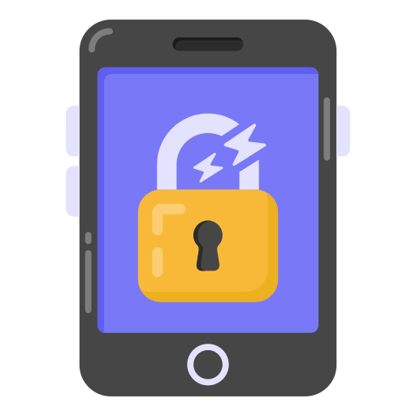
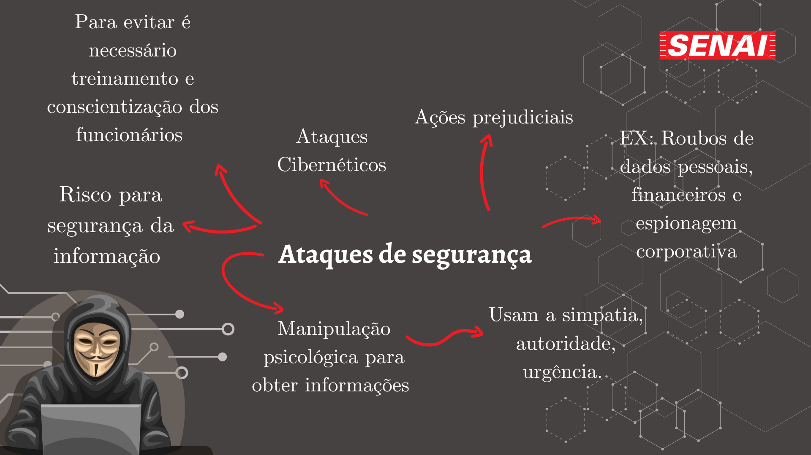

Engenharia social é um método utilizado por criminosos cibernéticos para manipular pessoas e obter informações confidenciais. Os ataques de engenharia social podem acontecer por meio de diferentes canais, como e-mail, redes sociais, telefone, entre outros.
TIPOS DE ATAQUES DE ENGENHARIA SOCIAL:
Phishing: é um tipo de ataque em que o criminoso envia um e-mail falso que parece ser de uma empresa legítima, solicitando informações confidenciais, como senhas e números de cartão de crédito.
Pretexting: é quando o criminoso se passa por outra pessoa, como um funcionário de uma empresa, para obter informações confidenciais.
Baiting: é um tipo de ataque em que o criminoso oferece um incentivo, como um download gratuito, para levar a vítima a clicar em um link malicioso.
COMO EVITAR ATAQUES DE ENGENHARIA SOCIAL?
Não compartilhe informações confidenciais por e-mail ou telefone, a menos que você tenha certeza de que está falando com uma fonte confiável.
Verifique se o e-mail é legítimo antes de clicar em qualquer link ou baixar anexos.
Não confie em pessoas que pedem informações confidenciais sem motivo aparente.
Tenha cuidado com downloads gratuitos ou ofertas muito boas para ser verdade.

CASO FAMOSO DE ATAQUE DE ENGENHARIA SOCIAL
Phishing do Yahoo: Em 2014, hackers usaram engenharia social para invadir as contas de email do Yahoo de várias celebridades e jornalistas. Eles enviaram e-mails de phishing que pareciam ser do Yahoo, pedindo às vítimas que clicassem em um link e inserissem suas informações de login. Os hackers usaram essas informações para acessar as contas de email das vítimas.
MAPA MENTAL

PARA MAIS INFORMAÇÕES:
2023 - Matheus Boletti, Thaína Dias e Manuela Messias